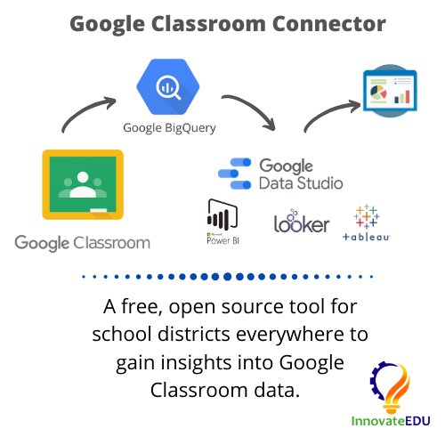
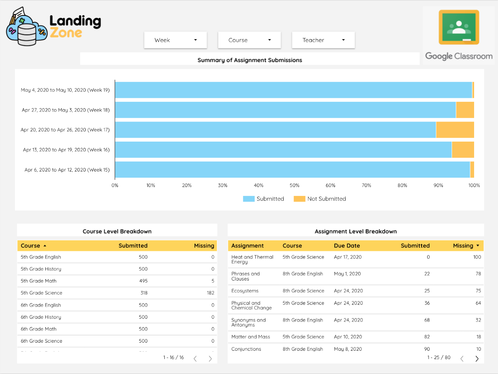

For schools that use Google Classroom, InnovateEDU has published a free, open-source tool to extract your Google Classroom data and load it into Google BigQuery. Using BigQuery, a fully managed cloud data warehouse, you can analyze Classroom data using SQL and create data dashboards or reports using popular business intelligence tools such as Google Data Studio, Tableau, Microsoft Power BI and Looker.
InnovateEDU is a national nonprofit that is focused on radically disrupting K12 education by supporting innovative learning models and tools at the intersection of data, technology, and education. Landing Zone, one of InnovateEDU's groundbreaking products, eliminates the high cost of building and maintaining data infrastructure by providing a managed solution where we integrate all education data that's important to you, together, in one place. We manage a Google Cloud project in your G Suite domain that leverages open data standards such as Ed-Fi and IMS to put up-to-date, useful data in your hands.
A few things are needed to be able to complete this tutorial and successfully pull Google Classroom data into BigQuery.
You will need a Google Cloud project to run the script within. If you already have a project that you'd like to run this within, you may skip this step. Otherwise, click the button below to jump straight to the project creation screen in Google Cloud. Once your project has been created, note the project ID assigned to it. You will need this project ID later on in this tutorial.
While the user running the script does not need to be an admin of your G Suite domain, you do need an admin to assist with the setup process. Later in this tutorial, you will create a service account and your G Suite admin will need to whitelist API client access for this account.
Access Google Cloud Shell via this link. Cloud Shell is an online Bash shell with file editor that makes it easy to manage your infrastructure or applications from the command line. Bash refers to the command language interpreter used by Cloud Shell. Copy and paste command below into your Cloud Shell, replacing <<PROJECT_ID>> with your Google Cloud project's ID.
Cloud Shell
$ gcloud config set project <<PROJECT_ID>>Run the command below to clone the GitHub repo linked on the previous page to a folder in your Cloud Shell.
Cloud Shell
$ git clone https://github.com/InnovateEDU-NYC/google_classroom.gitIn the Google Shell file editor, clicking on View → Toggle Hidden Files will show a .env-sample file located under the project folder. Create a new file named .env in the root of the project and copy the contents of this sample file into it. Configure the variables below and save the file.
Set ACCOUNT_EMAIL to the email of the G Suite user who will be running the connector.
The connector will pull down usage reports via the Reports API. If you'd like to filter these reports to only include students, set STUDENT_ORG_UNIT to the OU where your student accounts are located. The connector pulls reports for all users in the specified OU as well as its sub-OUs.
Set SCHOOL_YEAR_START to your school's start date using the format YYYY-MM-DD. If your district has multiple start dates, enter the earliest date.
Set DB to your Google Cloud project's ID.
Set DB_SCHEMA to the BigQuery dataset where you'd like the connector to create the Classroom tables.
A couple of APIs need to be enabled in the Google Cloud project.
Copy and paste two commands below into your Cloud Shell to enable the required APIs.
Cloud Shell
$ gcloud services enable classroom.googleapis.com
$ gcloud services enable admin.googleapis.comNavigate to your project's API Library, search the two APIs listed below, and enable them.
A service account is a special kind of account used by an application and not a person. This connector is an application that authenticates via a service account. Applications use service accounts to make authorized API calls.
In your Google Cloud Project, head to IAM & Admin → Service Accounts. Click Create Service Account. You may also use the link below to jump straight to the page.
Right click on your script folder in Google Cloud Shell's file edit and click Upload Files... to upload the newly created service account JSON. Rename the file to service.json
Your new service account will need to be whitelisted in your Google Admin console. Every service account has an unique ID. Select the newly created service account in your Cloud console and note the associated unique ID.
In your Google Admin console, navigate to Security → API Permissions. Scroll to the bottom of the page and click on Manage Domain-wide Delegation. You may also use the button below to jump straight there.
oAuth Scopes
https://www.googleapis.com/auth/admin.directory.orgunit,
https://www.googleapis.com/auth/admin.reports.usage.readonly,
https://www.googleapis.com/auth/classroom.announcements,
https://www.googleapis.com/auth/classroom.courses,
https://www.googleapis.com/auth/classroom.coursework.students,
https://www.googleapis.com/auth/classroom.guardianlinks.students,
https://www.googleapis.com/auth/classroom.profile.emails,
https://www.googleapis.com/auth/classroom.rosters,
https://www.googleapis.com/auth/classroom.student-submissions.students.readonly,
https://www.googleapis.com/auth/classroom.topicsThe commands below will show you how to build your Docker image and run the script. When using Cloud Shell, these two steps must be completed every time you'd like to refresh the data in BigQuery.
You are now ready to build your Docker image. Copy and paste the command below into your Cloud Shell. It may take 3 - 4 minutes for this command to complete.
Cloud Shell
$ docker build -t google_classroom .
We recommend you first run this script with the --courses flag only pulling in a subset of your Classroom data. This will allow you to verify that everything has been setup and configured correctly.
Cloud Shell
$ docker run --rm -it google_classroom --coursesIf you receive an error, try adding the --debug flag to the command above. This will cause the script to log additional information which may help in troubleshooting the error.
If the command above succeeded, you're now ready to fetch data from all Classroom API endpoints.
Cloud Shell
$ docker run --rm -it google_classroom --allBelow are all available flags for this script.
--all--usage--courses--topics--coursework--students--teachers--guardians--submissions--invites--aliases--invitations--announcementsWe've also published a Data Studio report template that makes visualizing this data easy. Once you have the Google Classroom tables created in your BigQuery, follow the steps below to copy our report into your Data Studio.

Before you can copy the report itself, you'll need to copy the data source into your Data Studio instance.
That's it! You now have the ability to make any modification you'd like to the SQL behind the data source or the Data Studio report itself. Happy building!
That's it! If you found this tutorial helpful, we encourage you to check out our Landing Zone website linked below. The Landing Zone team builds data infrastructure of education organizations. Google Classroom is one of the many vendors we pull data from for our customers.